釣行日誌 ＮＺ編
NZ 2018-19釣行 Vol - 2 後編 He-dayさん 特別寄稿
Day 4
フィッシング･トリップ4日目は、2時間ほどのドライヴで、2日目と同じスプリング・クリークへ出かけました。前回は曇天だったのに対し、この日は晴天。水中をゆっくりとクルージングする鱒の姿は時折目に入りますが、少しナーヴァスになっている様子で、フライを投げるとそれを嫌って沈んでしまう鱒が多いように感じました。
この日、He-Dayがキャッチした1尾目の鱒は、まだ日差しが穏やかだった午前8時ごろに、#12ケースド・カディスを捕らえました。インディケーター・ドライを鱒の背後に、60cmほどの長さのティペットをターンさせてドロッパー・ニンフは鱒の鼻先30cm辺りへ落とすという、ショート・ディスタンスでの正確なキャスト。Martinのアドヴァイス通りのキャストはなかなか成功せず、苦戦した末のストライクでした。
鱒がしっかりとフッキングした後、草が茂った滑りやすいバンクからそっと流れに入り、慎重にやり取りを続けます。間もなくMartinのネットに収まったのは、頬をうっすらとメタリック・ブルーに染めた63cm、優しい顔立ちの雄でした。
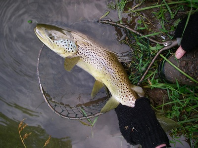
それから2時間近く、鱒がフライに反応しないスローな展開が続きました。日が高くなるにつれて、鱒の姿を見つけるのも難しくなってきたような気がします。午前10時ごろ、ようやく有望な鱒を見つけました。この川としては開けた大きなプールで、対岸のバンク際に定位し、時々、水中で何かを捕食する動作を見せています。
Me-Youが下流へ回り込んで流れに入り、ゆっくりと慎重に距離を詰めていきます。鱒の10mほど下流から、キャスティングを開始。よい位置にフライが落ちれば、かなりの確率でストライクに持ち込めそうな状況ですが、気まぐれに吹きつける強風がそれを許してくれません。
Me-Youが立っている場所はプールの流れ出し部分で、かなり川幅が狭くなっている上に、対岸からは丈の長い草が張り出していました。そこへ左側から強風が吹きつけると、ループが右側へ流され、リーダーが対岸で待ち受けていた草に絡まってしまうのです。He-Dayがバンクの草の間で待機していて、リーダーが絡むたびににじり寄って草から外し、Me-Youはキャスティングを再開。ようやくよい位置にフライが落ちたと思っても、鱒は素直に反応せず、そのうちにまた張り出した草にリーダーが絡んでしまいます。
じりじりするような時間が流れ、Me-Youは忍耐のキャスティングを続けました。そして、とうとう、インディケーター・ドライがすうっと沈む瞬間がやってきたのです。He-Dayはすぐにバンクを下って流れに入り、Me-Youの近くへ駆けつけました。掛かった鱒は、かなりの大物。何度もリールの逆転音を響かせた末に、ようやくMartinのネットに収まりました。
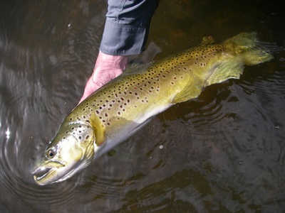
#14ケースド・カディスを口元に留めた、金色に輝く魚体。鮮やかな赤い斑点を体側に散らした64cm、迫力のある風貌の雄。苦戦の末の「逆転劇」に、Martinは大喜び。Me-Youもうれしかったはずですが、苦しい時間が長かっただけに、安堵感の方が大きいような表情でした。
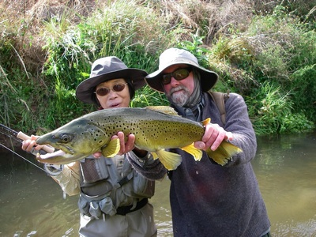
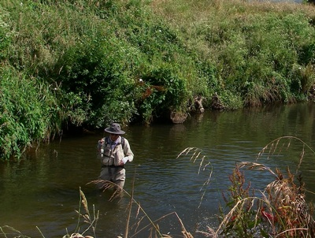
この1尾で今日は十分だというMe-Youの後を引き継いで、He-Dayは同じプールの流れ込みへインディケーター・ドライと#14ケースド・カディスをキャストしました。ほどなくインディケーター・ドライが水中に引き込まれ、元気な鱒がプールの中を駆け回ります。手元へ寄せてみると、メタリック・カラーがまぶしい40cm、健康的な体型のブラウン・トラウトでした。
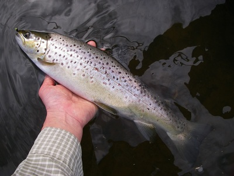
実は、2日前にこの川でキャッチした最後の鱒をリリースした後、10年以上も愛用していた思い出深いメジャーを川岸に置き忘れてしまいました。この日、メジャーとの「再会」を期待してその場所へ行ってみたのですが、メジャーは見つからないまま…。少しほろ苦い気分も味わいながら、帰途に就きました。
この日は、2018年最後の日。カフェ・レストランでの夕食を終えてモーテルの部屋へ戻ると、1年の終わりをこの場所で迎えられることを幸せに感じながら、NZワインで乾杯しました。
Day 5
新しい年を迎えて、初めての釣り。この日は、初日と同じ平原を流れる川へ出かけました。今回は、初日よりも上流のエリアへ入ります。初日と同様に晴天に恵まれ、「サイト・フィッシング日和」のように思われました。しかし、この日の日差しは一段と強さを増した様子で、川の水温が急速に上昇し、午前中の早い段階から厳しい状況に追い込まれてしまったのです。
Martinが先頭に立ち、He-DayとMe-Youが後に続いて、3人で澄んだ水の中を観察しながら川原を歩きますが、定位している鱒の姿は見当たりません。遡行を始めて2時間以上が経過したころ、ようやくMartinが岸近くの浅場にいる大きな鱒の姿を発見しました。水面に小さな波を立てて流れるカレントの中で定位していますが、何かを捕食している様子はありません。いつものインディケーター・ドライに、ドロッパー・ティペットと今回のフィッシング・トリップで実績を上げている#14ケースド・カディスを結び、川岸から離れてそっと鱒の下流へ回り込みます。鱒の10mほど下流で足場を固めてリールからフライ・ラインを引き出すと、そこから苦闘が始まりました。
リーダーとインディケーター・ドライは鱒よりも少し右側を通し、ドロッパー・ニンフが鱒の鼻先へ流れていくという、ほぼ理想的なナチュラル・ドリフトにも、鱒が全く反応しないのです。「鱒が逃げるまでは、チャンスがある。」というMartinの言葉を信じて、途切れそうになる集中力を何とか保ち、数回のフライ交換をはさんでキャスティングを繰り返すこと数十回。とうとう、インディケーター・ドライが沈む瞬間がやってきました。
奮い立って合わせると、ドスンと右肩に響く衝撃。フッキングした鱒は下流へ走り、He-Dayが川原を走って追いついたところで今度は上流へ突進しました。しっかりとロッドを曲げてプレッシャーをかけながら、上流へ向かって鱒を追いかけます。再度川を下り始めた鱒は徐々に疲れを見せ始め、やがて小石交じりの砂地の浅場に身を横たえました。金色を帯びた体側に濃褐色の斑紋をびっしりとまとった67cm、雄にしては優しい風貌のブラウン・トラウト。フックを外して水中で魚体を支えると、しばらくの間その場で休んだ後、ゆっくりと流心の深場へと去っていきました。
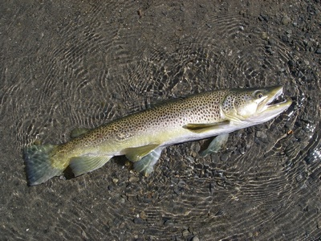
その1時間ほど後、Me-Youも大きな鱒を相手に粘った末、フッキングに持ち込みましたが、残念ながらすぐに外れてしまいました。昼過ぎには、暑さに負けて「ここが最後」と決めた大きなプールの流れ込み近くで、移動しながらフィーディングを繰り返す鱒を、He-Dayが追いかけながら狙い撃ちしてフッキング。鱒は分厚い体側を見せつけるように数回ジャンプを繰り返した後、一気に下流へ下り始めました。He-Dayも一生懸命鱒を追いかけて下流へ走ります。
数百mも下った頃、ようやく鱒が疲れを見せ始めました。ここで勝負をつけようと、ぐっとロッドを立てた瞬間……4Xフロロカーボン・ティペットが音もなく切れ、空中を舞いました。鱒は戸惑ったように一度頭を振った後、川底に溶け込むようにその姿を消していきます。勝負を長引かせてしまったことが、敗因。He-Dayは、容易には止まりそうもない震えを腕に感じながら、「敗北」を受け入れるしかありませんでした。
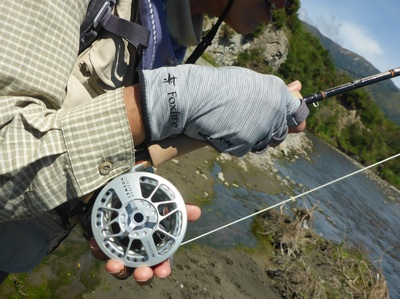
Day 6
フィッシング･トリップ6日目。とうとう、最終日を迎えてしまいました。2時間ほどのドライヴで少し離れたエリアにある川へ出かけたいと希望を伝えたのですが、Martinは止めておいた方がよいという意見でした。「あの川は、増水で釣りが難しい可能性が高い。川へ行ってみて、それから2時間かけて戻ってきていたら、釣りをする時間がなくなってしまう。リスクが大きすぎる。」と言うのです。しばらく悩んだ結果、3日前と同じ近場の川へ出かけることにしました。
タックルのセット・アップが終わると、Martinが足早に私たちを導いたのは、3日前に大きな鱒がドライ・フライに反応した、流木に囲まれた小さな深みがある場所でした。慎重に接近して流れの中を観察すると、今日も大きな鱒の姿が見えます。ティペット部分を少し切り詰めて短くなっていたリーダーに4Xティペットを長めに継ぎ足し、#14メイフライ・パラシュートを結びました。鱒の鼻先より50cmほど上流、水面から突き出した流木の枝すれすれの位置にドライ・フライをプレゼンテーションします。2投目で、大きな頭がゆっくりと水面を割りました。
しっかりと合わせた後、流木に巻かれないよう、少し強引に鱒を手元へ引き寄せます。鱒は流木の下へ突進するのは諦めて流心へ出てきましたが、その後は重い流れに乗って下流へ突っ走りました。He-Dayも滑りやすい底石の上を半分流されるような感覚で数十mほど鱒を追いかけ、岸寄りの浅場でランディング。精悍な顔立ちの雄、60cmのブラウン・トラウトでした。この鱒の尾鰭には、ざっくりと大きく噛みちぎられたような傷がありました。Martinによれば、ウナギに噛みつかれた傷だということです。尾鰭をこれだけ負傷していながら、あれほどのパワーを発揮したという事実に、改めて驚かされました。
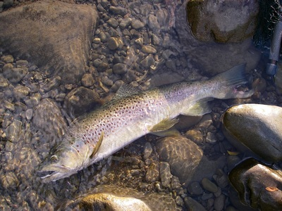
午前7時過ぎに1尾目の鱒をキャッチしてから、3時間以上が経過しました。上流へ行くにつれて川幅が狭くなり、両岸の河畔林から木の枝が水面まで張り出している場所も増えて、キャスティングが難しくなってきました。これ以上遡行を続けても見込みは薄いということで、藪漕ぎをして河畔林を抜け、川岸のバンクを歩いてMartinのX-TRAILへ戻ります。河畔林が途切れて川の水面を見下ろせる場所へ来た時、Martinが大きな鱒を2尾見つけました。この川としては大きなプールの流れ込み近くで、盛んにフィーディングしています。私たちはプールの流れ出しの方まで下り、川岸のバンクから滑り降りて対岸へ渡りました。水深はHe-Dayの腰上、Me-Youの胸部近くまであって、渡るのも結構大変です。
ゆっくりとプールの流れ込みに近づき、ニンフの沈下時間を確保するため、プール上流の瀬尻へキャストします。ニンフをより深く沈められるように、少しずつ上流へ投げる距離を伸ばしながら十数回キャスティングを繰り返しましたが、流れ下るインディケーター・ドライには全く反応がありませんでした。
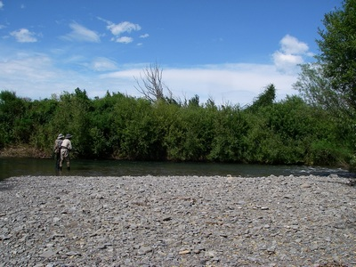
半分諦めかけたところで、Martinからフライ・チェンジの声がかかりました。「多分、ニンフが軽すぎて、鱒の泳層まで届いていない。」そう言って渡されたのは、#10 Hellgrammite。ソラックスに大きめのタングステン・ビードを持つ、へヴィウェイト・ニンフです。ワイド・ループで、重いニンフを瀬尻へ放り込むようにキャスト。インディケーター・ドライがプールのドロップ・オフに差しかかった辺りで、いきなり水中へ引き込まれました。「まさか1投目で」と信じられないような思いでロッドを立てると、ドスンと重い衝撃が肩まで走りました。
フッキングした大きな鱒は、プールの流れ出しの方へ向かって一気に駆け下りました。鱒が向かった先には、流木が絡み合うように沈んでいます。この時使用していたティペットは、“MAXIMA”の6lbテスト。これまで、鱒との引っ張り合いで切れたことは一度もありません。ティペットの強度を信じて、6wtロッドを限界まで引き絞り、鱒の突進を阻止します。ようやく鱒を引き戻すと、今度は上流のブッシュ下へ潜り込もうと突っ走りました。「勝負を長引かせたら、またティペットが切れるかもしれない」と、昨日の「敗北」が頭をよぎります。“quick landing”に持ち込むことを決意し、しっかりとロッドを立てて耐え、鱒を岸辺の浅場へ引き寄せました。
浅場へ来て横倒しになったところでMartinが慎重にネットに収めてくれたのは、61cm・7lbのブラウン・トラウトでした。胴回りが36cmもある見事な体躯を持ちながら、優しい表情が印象的な雄。冷たく澄んだ水の中でしばらく支えていると、ゆっくりとHe-Dayの手から離れ、プールの底へ消えていきました。
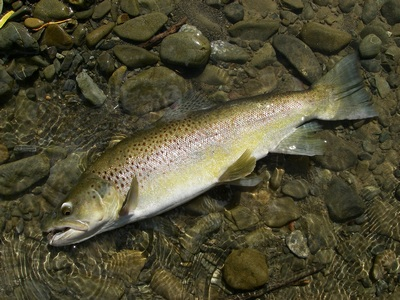
最後に素晴らしい鱒と出会えたおかげで、私たちのフィッシング・トリップは “perfect finish” を迎えることができました。私たちは感謝の思いを込めてMartinと握手を交わし、帰途に就きました。
今回のフィッシング・トリップで手にした鱒は16尾でしたが、その中で60cmを超える鱒は9尾。Martinが熱く語る “Quality of Fish” は素晴らしいものでした。またいつか、この地を再訪して、大きな鱒と出会ってみたい。そんな思いを心地よく反芻しながら、この町で最後の夜をカフェ・レストランでゆっくりと過ごしました。
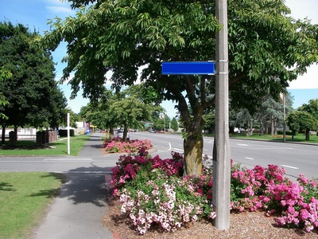
翌日は午前10時にモーテルをチェック・アウトし、クライストチャーチ空港へ向けて出発します。空は気持ちよく晴れ、背の高い街路樹の足元を飾る薔薇の花の色彩がいっそう鮮やかに感じられました。短い滞在期間の間に、この町が大好きになってしまったようです。私たちは名残惜しい気持ちを強く感じながら、町を後にしました。
あとがき
また、NZでのフィッシング・トリップが終わってしまいました。出かけるまでは、ゆっくりと楽しんでこようと思うのですが、いざ出発の日を迎えると、そこから先はいつもあっという間です。帰国途上で、反省したり後悔したりすることがたくさんあって、残念な気持ちになることもしばしば。そして、また挑戦したいという思いが湧き上がってくるのです。
このたびは、二部にわたる長い釣行記を最後までお読みいただき、本当にありがとうございました。この文章をお読みくださった皆様がNZへの旅を実現され、素晴らしい鱒と出会われますことを心よりお祈りしています。
釣行日誌ＮＺ編 目次へ
サイトマップ
ホームへ
お問い合わせ